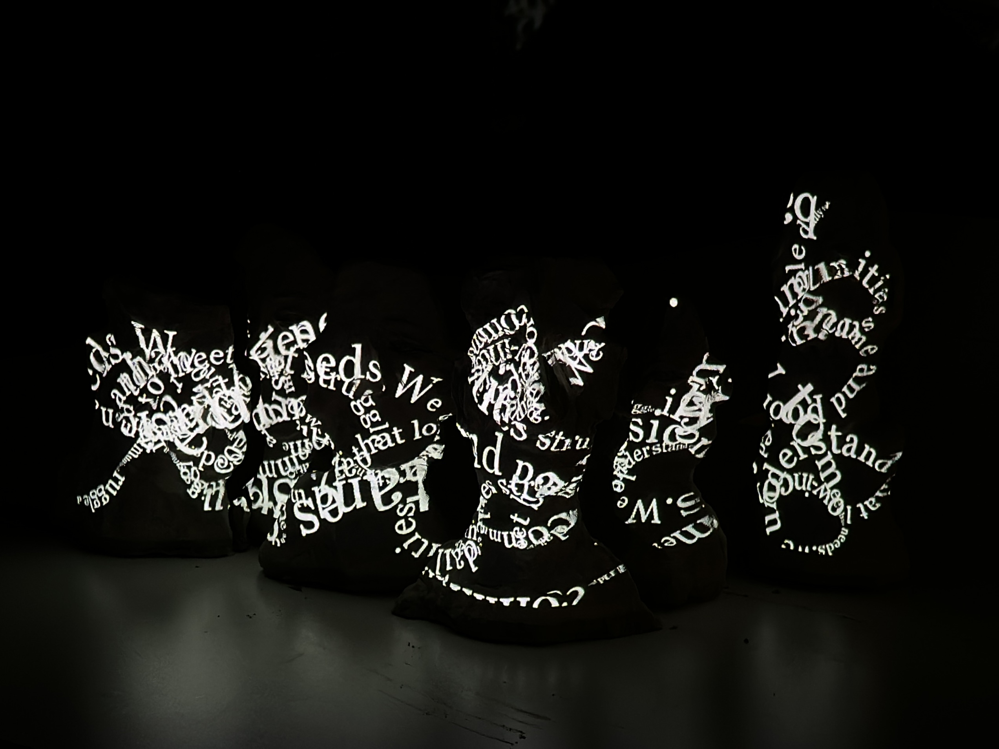
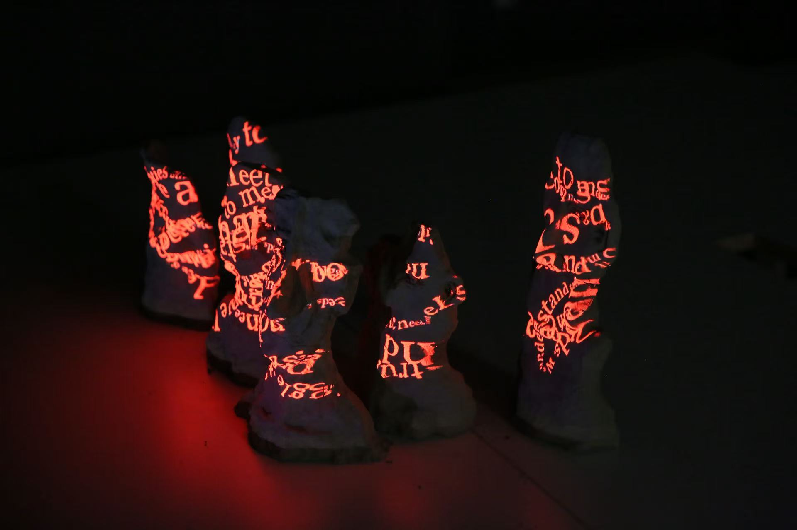
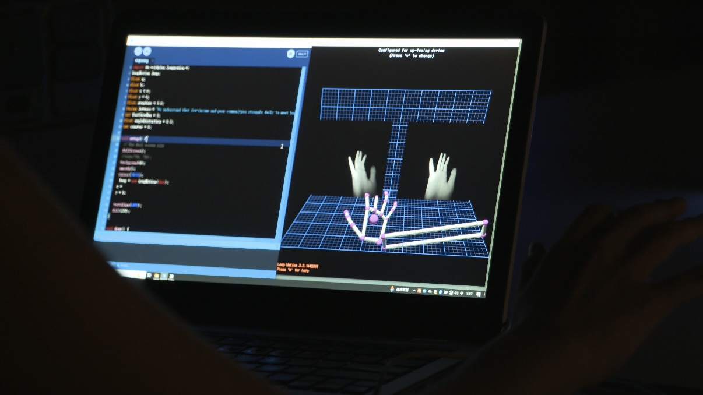
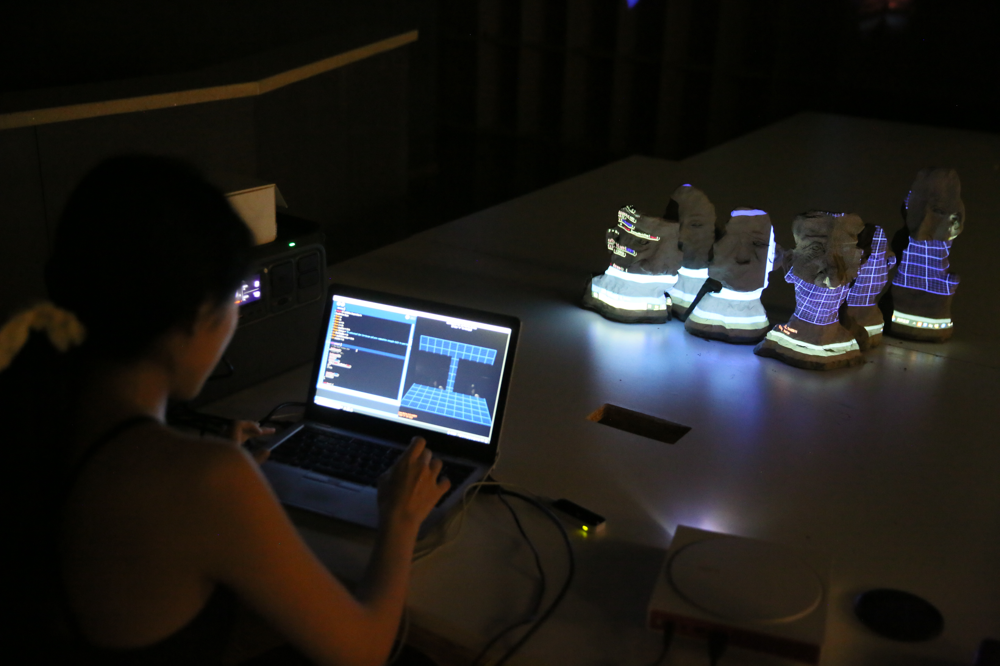
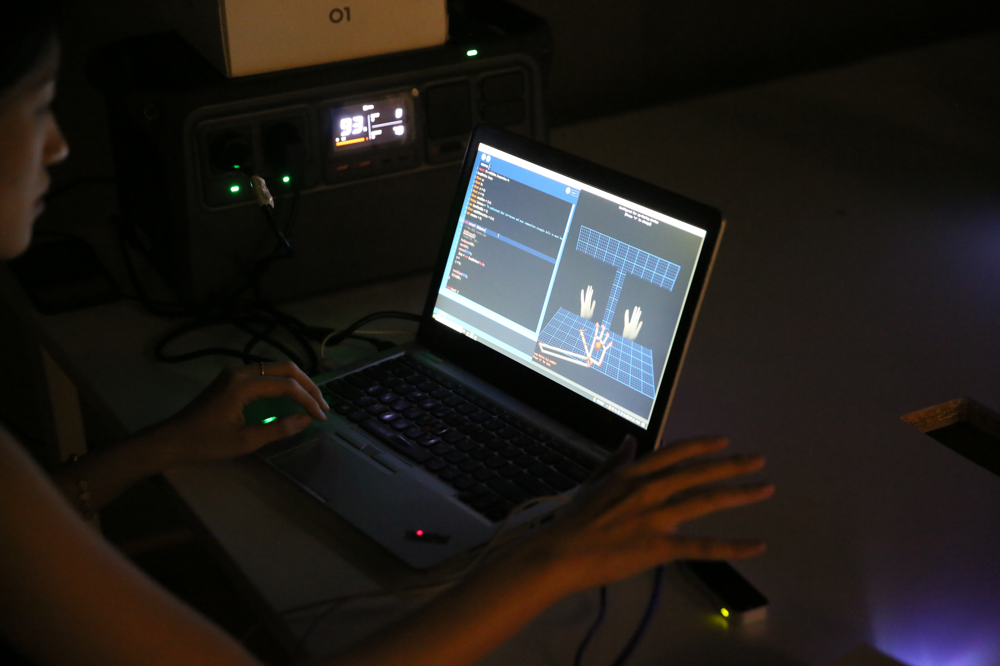
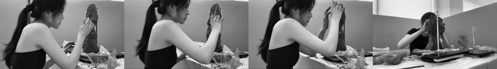
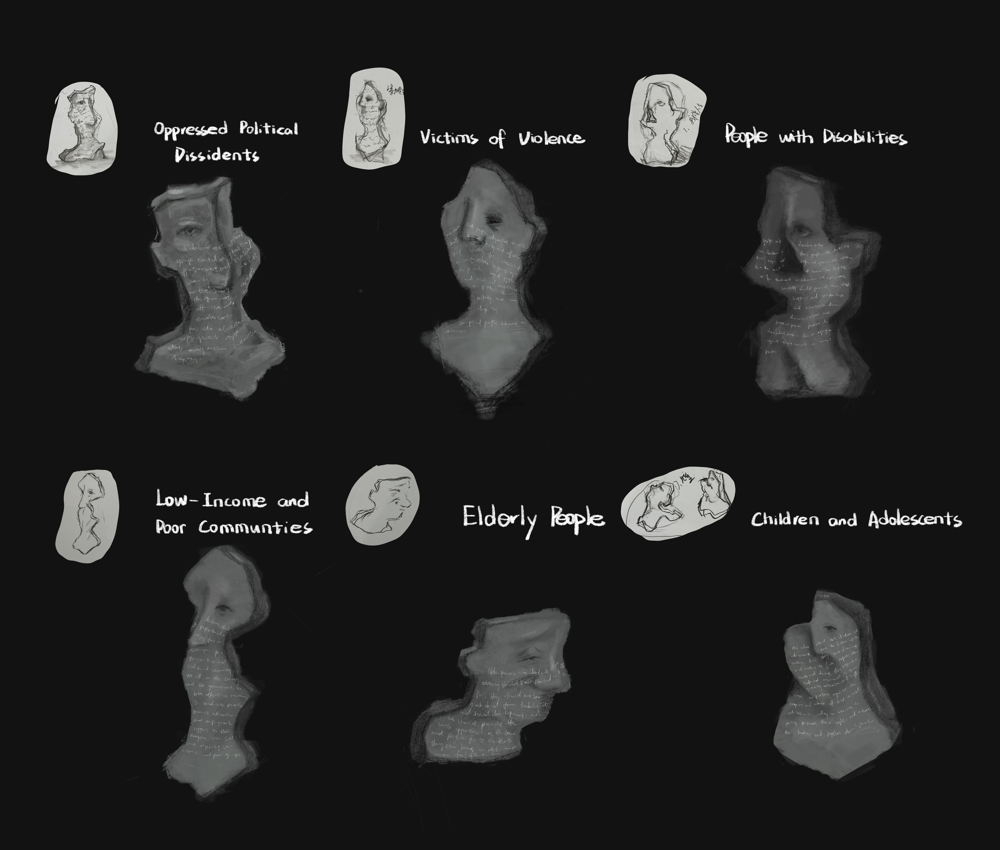

For years, I have been engaged in work that focuses on marginalized communities, exploring ways to make unheard voices visible.
Inspired by artists such as Shirin Neshat, this project investigates how interaction can become a medium for expression. “Manifesto” is an installation that allows audiences to amplify suppressed voices through gesture-based interaction.
The installation, uses gesture interaction to project manifestos from different social groups onto sculptural forms. The speed of movement controls the scale of the projected text — the faster the motion, the stronger the expression.
Clay was chosen for its fragile and weathered qualities. Each incomplete form reflects the vulnerability and marginalization of these groups.


As viewers move their hands, different manifestos emerge and respond dynamically. The interaction creates a direct relationship between body and expression, allowing participants to actively amplify these voices.





This project aims to create a space where unheard voices can be seen, felt, and amplified.